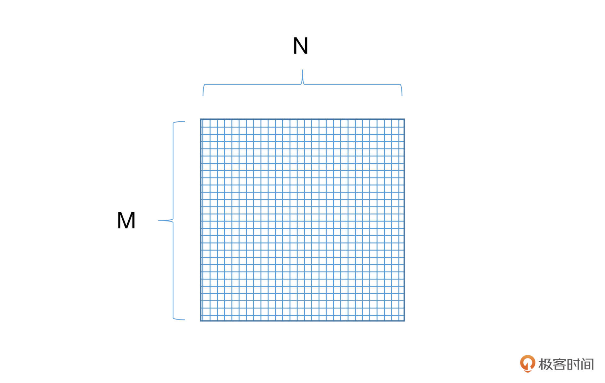

- 00 开篇词 如何高效入门PyTorch？.md.html
- 01 PyTorch：网红中的顶流明星.md.html
- 02 NumPy（上）：核心数据结构详解.md.html
- 03 NumPy（下）：深度学习中的常用操作.md.html
- 04 Tensor：PyTorch中最基础的计算单元.md.html
- 05 Tensor变形记：快速掌握Tensor切分、变形等方法.md.html
- 06 Torchvision（上）：数据读取，训练开始的第一步.md.html
- 07 Torchvision（中）：数据增强，让数据更加多样性.md.html
- 08 Torchvision（下）：其他有趣的功能.md.html
- 09 卷积（上）：如何用卷积为计算机“开天眼”？.md.html
- 10 卷积（下）：如何用卷积为计算机“开天眼”？.md.html
- 11 损失函数：如何帮助模型学会“自省”？.md.html
- 12 计算梯度：网络的前向与反向传播.md.html
- 13 优化方法：更新模型参数的方法.md.html
- 14 构建网络：一站式实现模型搭建与训练.md.html
- 15 可视化工具：如何实现训练的可视化监控？.md.html
- 16 分布式训练：如何加速你的模型训练？.md.html
- 17 图像分类（上）：图像分类原理与图像分类模型.md.html
- 18 图像分类（下）：如何构建一个图像分类模型_.md.html
- 19 图像分割（上）：详解图像分割原理与图像分割模型.md.html
- 20 图像分割（下）：如何构建一个图像分割模型？.md.html
- 21 NLP基础（上）：详解自然语言处理原理与常用算法.md.html
- 22 NLP基础（下）：详解语言模型与注意力机制.md.html
- 23 情感分析：如何使用LSTM进行情感分析？.md.html
- 24 文本分类：如何使用BERT构建文本分类模型？.md.html
- 25 摘要：如何快速实现自动文摘生成？.md.html
- 加餐 机器学习其实就那么几件事.md.html
- 用户故事 Tango：师傅领进门，修行在个人.md.html
- 答疑篇 思考题答案集锦.md.html
- 结束语 人生充满选择，选择与努力同样重要.md.html
- 捐赠
22 NLP基础（下）：详解语言模型与注意力机制
你好，我是方远。
在上节课中，我们一同了解了NLP任务中的几个经典问题，这些方法各有千秋，但是我们也发现，有的方法并不能很好地将文本中单词、词组的顺序关系或者语义关系记录下来，也就是说，不能很好地量化表示，也不能对语言内容不同部分的重要程度加以区分。
那么，有没有一种方法，可以把语言变成一种数学计算过程，比如采用概率、向量等方式对语言的生成和分析加以表示呢？答案当然是肯定的，这就是这节课我们要讲到的语言模型。
那如何区分语言不同部分的重要程度呢？我会从深度学习中最火热的注意力机制这一角度为你讲解。
语言模型
语言模型是根据语言客观事实而进行的语言抽象数学建模，是一种对应关系。很多NLP任务中，都涉及到一个问题：对于一个确定的概念或者表达，判断哪种表示结果是最有可能的。
我们结合两个例子体会一下。
先看第一个例子，翻译文字是：今天天气很好。可能的结果是： res1 = Today is a fine day. res2 = Today is a good day.那么我们最后要的结果就是看概率P(res1)和P(res2)哪个更大。
再比如说，问答系统提问：我什么时候才能成为亿万富翁。可能的结果有：ans1 = 白日做梦去吧。ans2 = 红烧肉得加点冰糖。那么，最后返回的答案就要选择最贴近问题内容本身的结果，这里就是前一个答案。
对于上面例子中提到的问题，我们很自然就会联想到，可以使用概率统计的方法来建立一个语言模型，这种模型我们称之为统计语言模型。
统计语言模型
统计语言模型的原理，简单来说就是计算一句话是自然语言（也就是一个正常句子）的概率。多年以来，专家学者构建出了非常多的语言模型，其中最为经典的就是基于马尔可夫假设n-gram语言模型，它也是被广泛采用的模型之一。
接下来我们先从一个简单的抽象例子出发，来了解一下什么是统计语言模型。
给定一个句子S=w1,w2,w3,…,wn，则生成该句子的概率为：p(S)=p(w1,w2,w3,w4,w5,…,wn)，再由链式法则我们可以继续得到：p(S)=p(w1)p(w2|w1)p(w3|w1,w2)…p(wn|w1,w2,…,wn-1)。那么这个p(S)就是我们所要的统计语言模型。
那么问题来了，你会发现从p(w1,w2,w3,w4,w5,…,wn)到p(w1)p(w2|w1)p(w3|w1,w2)…p(wn|w1,w2,…,wn-1)无非是一个概率传递的过程，有一个非常本质的问题并没有被解决，那就是语料中数据必定存在稀疏的问题，公式中的很多部分是没有统计值的，那就成了0了，而且参数量真的实在是太大了。
怎么办呢？我们观察一下后面这句话：“我们本节课将会介绍统计语言模型及其定义”。其中“定义”这个词，是谁的定义呢？是“其”的。那“其”又是谁呢？是前面的“语言模型”的。于是我们发现，对于文本中的一个词，它出现的概率，很大程度上是由这个单词前面的一个或者几个单词决定的，这就是马尔可夫假设。
有了马尔可夫假设，我们就可以把前面的公式中的p(wn|w1,w2,…,wn-1)进一步简化，简化的程度取决于你认为一个单词是由前面的几个单词所决定的，如果只由前面的一个单词决定，那它就是p(wn|wn-1)，我们称之为bigram。如果由前面两个单词决定，则变为p(wn|wn-2wn-1)，我们称之为trigram。
当然了，如果你认为单词的出现仅由其本身决定的，与其他单词无关，就变成了最简单的形式：p(wn)，我们称之为unigram（一元模型）。
那么现在我们知道了，基于马尔可夫链的统计语言模型，其核心就在于基于统计的条件概率。为了计算一个句子的生成概率，我们只需要统计每个词及其前面n个词的共现条件概率，再经过简单的乘法计算就可以得到最终结果了。
神经网络语言模型
ngram模型一定程度上减少了参数的数量，但是如果n比较大，或者相关语料比较少的时候，数据稀疏问题仍然不能得到很好地解决。
这就好比我们把水浒传的文本放入模型中进行统计训练，最后却问模型林冲和潘金莲的关系，这就很难回答了。
因为基于ngram的统计模型实在是收集不到两者共现的文本。这种稀疏问题靠统计肯定不行了。那么怎么办呢？这时候就轮到神经网络语言模型闪亮登场了。
其实从本质上说，神经网络语言模型也是通过ngram来进行语言的建模，但是神经网络的学习不是通过计数统计的方法，而是通过神经网络内部神经元针对数据不断更新。
具体是怎么做的呢？首先我们要定义一个向量空间，假定这个空间是一百维的，这就意味着，对于每个单词，我们可以用一个一百维的向量对其进行表示，比如V(中国)=[0.2821289, 0.171265, 0.12378123,…,0.172364]。
这样，对于任意两个单词，我们可以用距离计算的方式来评价它们之间的联系。比如我们使用cosin距离计算“中国”和“北京”两个单词的距离，就大概率要比“中国”和“西瓜”的距离要近得多。
这样做有什么好处呢？首先，词与词之间的距离可以作为两个词之间相似性的度量。其次，向量空间隐含了很多的数学计算，比如经典的V(国王)- V(皇后) = V(男人) - V(女人) ，这让词语之间有了更多的语义上的关联。
除了维度，为了确定向量空间，我们还需要确定这个空间有多少个“点”，也就是词语的数量有多少。一般来说，我们是将语料库中出现超过一定阈值次数的单词保留，把这些留下来的单词的数量，作为空间点的量了。
我们具体看看实际的操作过程中是怎么做的。我们只需要建立一个M*N大小的矩阵，并随机初始化里面的每一个数值，其中M表示的是词语的数量，N表示词语的维度。我们把这样矩阵叫做词向量矩阵。

既然是随机初始化的，那么就意味着这个向量空间不能作为我们的语言模型使用。下面我们就要想办法让这个矩阵学到内容。如下图：

刚才我们说过，神经网络语言模型也是通过ngram来进行语言建模的。假定我们的ngram长度为n，那么我们就从词向量矩阵中找到对应的前n-1个词的向量，经过若干层神经网络（包括激活函数），将这n-1个词的向量映射到对应的条件概率分布空间中。最后，模型就可以通过参数更新的方式，学习词向量的映射关系参数，以及上下文单词出现的条件概率参数了。
简单来说就是，我们使用n-1个词，预测第n个词，并利用预测出来的词向量跟真实的词向量做损失函数并更新，就可以不断更新词向量矩阵，从而获得一个语言模型。这种类型的神经网络语言模型我们称之为前馈网络语言模型。
除了前馈网络语言模型，还有一种叫做基于LSTM的语言模型。下节课，我们将会通过LSTM完成情感分析任务的项目，进一步细化LSTM神经网络语言模型的训练过程，同时也会用到前面提到的词向量矩阵。
现在，我们回过头来比较一下统计语言模型和神经网络语言模型的区别。统计语言模型的本质是基于词与词共现频次的统计，而神经网络语言模型则是给每个词分别赋予了向量空间的位置作为表征，从而计算它们在高维连续空间中的依赖关系。相对来说，神经网络的表示以及非线性映射，更加适合对自然语言进行建模。
注意力机制
如果你足够细心就会发现，在前面介绍的神经网络语言模型中，我们似乎漏掉了一个点，那就是，对于一个由n个单词组成的句子来说，不同位置的单词，重要性是不一样的。因此，我们需要让模型“注意”到那些相对更加重要的单词，这种方式我们称之为注意力机制，也称作Attention机制。
既然是机制，它就不是一个算法，准确来说是一个构建网络的思路。关于注意力机制最经典的论文就是大名鼎鼎的《Attention Is All You Need》，如果你有兴趣的话，可以自行阅读这篇论文。
因为我们的专栏是以动手实践为主，重在实际应用各种机器学习的理论，所以不会对其内部的数学原理进行过多剖析，但是我们还是要知道它是怎么运作的。
我们从一个例子入手，比如“我今天中午跑到了肯德基吃了仨汉堡”。这句话中，你一定对“我”、“肯德基”、“仨”、“汉堡”这几个词比较在意，不过，你是不是没注意到“跑”字？
其实Attention机制要做的就是这件事：找到最重要的关键内容。它对网络中的输入（或者中间层）的不同位置，给予了不同的注意力或者权重，然后再通过学习，网络就可以逐渐知道哪些是重点，哪些是可以舍弃的内容了。
在前面的神经网络语言模型中，对于一个确定的单词，它的向量是固定的，但是现在不一样了，因为Attention机制，对于同一个单词，在不同语境下它的向量表达是不一样的。
下面这张图是Attention机制和RNN结合的例子。其中红色框中的是RNN的展开模式，我们可以看到，我/爱/极/客四个字的向量沿着绿色箭头的方向传递，每个字从RNN节点出来之后都会有一个隐藏状态h，也就是输入节点上面的蓝色方框，在这个过程中每个状态的权重是一样的，不分大小。
而蓝色框就是Attention机制所加入的部分，其中的每个α就是每个状态h的权重，有了这个权重，就可以将所有的状态h，加权汇总到softmax中，然后求和得到最终输出C。这个C就可以为后续的RNN判断权重，提供更多的计算依据。
你看，这个注意力机制的原理其实很简单，但是也很巧妙。只需要增加很少的参数，就可以让模型自己弄清楚谁重要谁次要。那么下面我们来看一下抽象化之后的Attention，如下图，这张图想必你应该在很多attention的相关介绍中见过了。
在这里输入是query(Q), key(K), value(V)，输出是attention value。跟刚才Attention与RNN结合的图类比，query就是上一个时间节点传递进来的状态Zt-1，而这个Zt-1就是上一个时间节点输出的编码。key就是各个隐藏状态h，value也是隐藏状态h（h1, h2…hn）。模型通过Q和K的匹配公式计算出权重，再同V结合就可以得到输出，这就相当于计算得到了当前的输出和所有输入的匹配度，公式如下：
\[\\operatorname{Attention}(Q, K, V)=\\operatorname{softmax}(\\operatorname{sim}(Q, K)) V\]
Attention目前主要有两种，一种是soft attention，一种是hard attention。hard attention关注的是当前词附近很小的一个区域，而soft attention则是关注了更大更广的范围，也更为常用。
作为应用者，你了解到Attention的基本原理就足够使用了，因为现在已经有了很多基于Attention的预训练模型可以直接使用。如果你想了解更深入，可以跟我在留言区和交流群中进一步讨论。
小结
恭喜你完成了今天的学习任务。
今天我们一起学习了语言模型的基本原理，了解了注意力机制如何给模型赋能，让模型更加“善解人意”，提高它抓取文本重点内容的能力。
通过语言模型，我们可以将语言文字变成可以计算的形式，让文字之间有了更为直接的关联。有了注意力机制，我们可以让模型了解到哪些是应该被更加关注的内容，从而提高语言模型的效果。如果你对注意力机制的数学原理感兴趣，并需要更深层次的专项学习，推荐你阅读《Attention Is All You Need》这篇论文。
至此我们通过两节课了解了NLP任务中的基础问题和重要内容，接下来的课程中，我们即将迎来动手操作环节。
首先是基于LSTM的情感分析项目，通过这个项目，你可以了解语言模型的构建方法，并可以实现一个由情感感知能力构成的模型。之后，我们还会使用目前火热的Bert模型来构建一个效果非常给力的文本分类模型，敬请期待。
每课一练
词向量的长度多少比较合适呢？越长越好吗？
欢迎你在留言区跟我交流互动，也推荐你把这节课分享给更多同事、朋友。
© 2019 - 2023 Liangliang Lee. Powered by gin and hexo-theme-book.